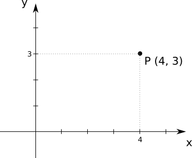
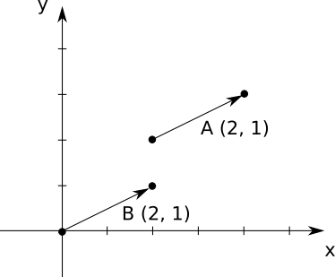
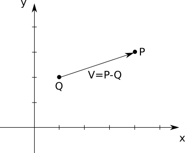
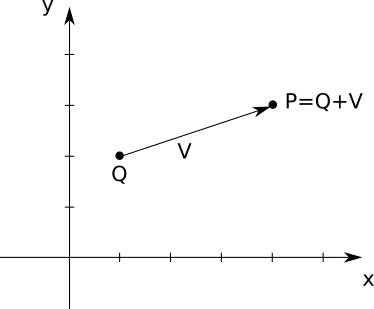
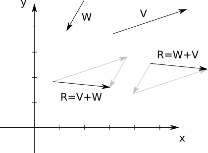
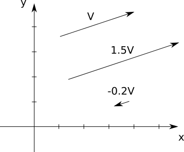
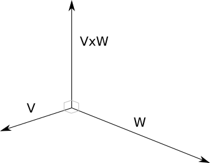

Linear Algebra
This appendix serves as a cheat sheet for linear algebra. The subject is presented as a set of tools, their properties, and what you can use them for. If you’re interested in the theory behind all this, you can pick up any introductory linear algebra textbook.
The focus here is exclusively on 2D and 3D algebra, as that’s what’s required in this book.
Points
A point represents a position within a coordinate system.
We represent a point as a sequence of numbers between parentheses—for example, \((4, 3)\). We refer to points using capital letters, such as \(P\) or \(Q\).
Each of the numbers in the point’s sequence is called a coordinate. The number of coordinates is the point’s dimension. A point with two coordinates is called two-dimensional, or 2D.
The order of the numbers is important; \((4, 3)\) is not the same as \((3, 4)\). By convention, the coordinates are called \(x\) and \(y\) in 2D, and \(x\), \(y\), and \(z\) in 3D; so the point \((4, 3)\) has an \(x\) coordinate of \(4\) and a \(y\) coordinate of \(3\). Figure A-1 shows \(P\), a 2D point with coordinates \((4, 3)\).

We can also refer to specific coordinates of a point using a subscript, like \(P_x\) or \(Q_y\). So the point \(P\) can also be written as \((P_x, P_y, P_z)\) when convenient.
Vectors
A vector represents the difference between two points. Intuitively, imagine a vector as an arrow that connects a point to another point; alternatively, think of it as the instructions to get from one point to another.
Representing Vectors
We represent a vector as a set of numbers between parentheses, and refer to them using a capital letter. This is the same representation we use for points, so we add a small arrow on top to remember they’re vectors and not points. For example, \((2, 1)\) is a vector, which we might decide to call \(\vec{A}\). Figure A-2 shows two equal vectors, \(\vec{A}\) and \(\vec{B}\).

Despite sharing their representation with points, vectors don’t represent or have a position; they are, after all, the difference between two positions. When you have a diagram like Figure A-2, you have to draw vectors somewhere; but the vectors \(\vec{A}\) and \(\vec{B}\) are equal, because they represent the same displacement.
In addition, the point \((2, 1)\) and the vector \((2, 1)\) are unrelated. Sure, the vector \((2, 1)\) goes from \((0, 0)\) to \((2, 1)\), but it’s equally true that it goes from, say, \((5, 5)\) to \((7, 6)\).
Vectors are characterized by their direction (the angle in which they point) and their magnitude (how long they are).
The direction can be further decomposed into orientation (the slope of the line they’re on) and sense (which of the possible two ways along that line they point). For example, a vector pointing right and a vector pointing left both have the same horizontal orientation, but they have the opposite sense. However, we don’t make this distinction anywhere in this book.
Vector Magnitude
You can compute the magnitude of a vector from its coordinates. The magnitude is also called the length or norm of the vector. It’s denoted by putting the vector between vertical pipes, as in \(|\vec{V}|\), and it’s computed as follows:
\[|\vec{V}| = \sqrt{{V_x}^2 + {V_y}^2 + {V_z}^2}\]
A vector with a magnitude equal to \(1.0\) is called a unit vector.
Point and Vector Operations
Now that we’ve defined points and vectors, let’s explore what we can do with them.
Subtracting Points
A vector is the difference between two points. In other words, you can subtract two points and get a vector:
\[\vec{V} = P - Q\]
In this case, you can think of \(\vec{V}\) as “going” from \(Q\) to \(P\), as in Figure A-3.

Algebraically, you subtract each of the coordinates separately:
\[(V_x, V_y, V_z) = (P_x, P_y, P_z) - (Q_x, Q_y, Q_z) = (P_x - Q_x, P_y - Q_y, P_z - Q_z)\]
Adding a Point and a Vector
We can rewrite the equation above coordinate by coordinate:
\[V_x = P_x - Q_x\] \[V_y = P_y - Q_y\] \[V_z = P_z - Q_z\]
These are just numbers, so all the usual rules apply. This means you can do this:
\[Q_x + V_x = P_x\] \[Q_y + V_y = P_y\] \[Q_z + V_z = P_z\]
And grouping the coordinates again,
\[Q + \vec{V} = P\]
In other words, you can add a vector to a point and get a new point. This makes intuitive and geometric sense; given a starting position (a point) and a displacement (a vector), you end up in a new position (another point). Figure A-4 presents an example.

Adding Vectors
You can add two vectors. Geometrically, imagine putting one vector “after” another, as in Figure A-5.

As you can see, vector addition is commutative—that is, the order of the operands doesn’t matter. In the diagram, we can see that \(\vec{V} + \vec{W} = \vec{W} + \vec{V}\).
Algebraically, you add the coordinates individually:
\[\vec{V} + \vec{W} = (V_x, V_y, V_z) + (W_x, W_y, W_z) = (V_x + W_x, V_y + W_y, V_z + W_z)\]
Multiplying a Vector by a Number
You can multiply a vector by a number. This is called the scalar product. This makes the vector shorter or longer, as you can see in Figure A-6.

If the number is negative, the vector will point the other way; this means it changes its sense and therefore its direction. But multiplying a vector by a number never changes its orientation—that is, it will remain along the same line.
Algebraically, you multiply the coordinates individually:
\[k \cdot \vec{V} = k \cdot (V_x, V_y, V_z) = (k \cdot V_x, k \cdot V_y, k \cdot V_z)\]
You can also divide a vector by a number. Just like with numbers, dividing by \(k\) is equivalent to multiplying by \(\frac{1}{k}\). As usual, division by zero doesn’t work.
One of the applications of vector multiplication and division is to normalize a vector—that is, to turn it into a unit vector. This changes the magnitude of the vector to \(1.0\), but doesn’t change its other properties. To do this, we just need to divide the vector by its length:
\[\vec{V_{normalized}} = \frac{\vec{V}}{|\vec{V}|}\]
Multiplying Vectors
You can multiply a vector by another vector. Interestingly, there are many ways in which you can define an operation like this. We’re going to focus on two kinds of multiplication that are useful to us: the dot product and the cross product.
Dot Product
The dot product between two vectors (also called the inner product) gives you a number. It’s expressed using the dot operator, as in \(\vec{V} \cdot \vec{W}\). It’s also written between angle braces, as in \(\langle \vec{V}, \vec{W} \rangle\).
Algebraically, you multiply the coordinates individually and add them:
\[\langle \vec{V}, \vec{W} \rangle = \langle(V_x, V_y, V_z), (W_x, W_y, W_z)\rangle = V_x \cdot W_x + V_y \cdot W_y + V_z \cdot W_z\]
Geometrically, the dot product of \(\vec{V}\) and \(\vec{W}\) is related to their lengths and to the angle \(\alpha\) between them. The exact formula neatly ties together linear algebra and trigonometry:
\[\langle \vec{V}, \vec{W} \rangle = |\vec{V}| \cdot |\vec{W}| \cdot \textrm{cos}(\alpha)\]
Either of these formulas help us see that the dot product is commutative (that is, \(\langle \vec{V}, \vec{W} \rangle\) = \(\langle \vec{W}, \vec{V} \rangle\)) and that it’s associative with respect to a scalar product (that is, \(k \cdot \langle \vec{V}, \vec{W} \rangle = \langle k \cdot \vec{V}, \vec{W} \rangle\)).
An interesting consequence of the second formula is that if \(\vec{V}\) and \(\vec{W}\) are perpendicular, then cos\((\alpha) = 0\) and therefore \(\langle \vec{V}, \vec{W} \rangle\) is also zero. If \(\vec{V}\) and \(\vec{W}\) are unit vectors, then \(\langle \vec{V}, \vec{W} \rangle\) is always between \(-1.0\) and \(1.0\), with \(1.0\) meaning they’re equal and \(-1.0\) meaning they’re opposite.
The second formula also suggests the dot product can be used to calculate the angle between two vectors:
\[\alpha = cos^{-1} \left( \frac{\langle \vec{V}, \vec{W} \rangle}{|\vec{V}| \cdot |\vec{W}|} \right)\]
Note that the dot product of a vector with itself, \(\langle \vec{V}, \vec{V} \rangle\), reduces to the square of its length:
\[\langle \vec{V}, \vec{V} \rangle = {V_x}^2 + {V_y}^2 + {V_z}^2 = {|\vec{V}|}^2\]
This suggests another way to compute the length of a vector, as the square root of its dot product with itself:
\[|\vec{V}| = \sqrt{\langle \vec{V}, \vec{V} \rangle}\]
Cross Product
The cross product between two vectors gives you another vector. It’s expressed using the cross operator, as in \(\vec{V} \times \vec{W}\).
The cross product of two vectors is a vector perpendicular to both of them. In this book we only use the cross product on 3D vectors, shown in Figure A-7.

The computation is a bit more involved than the dot product. If \(\vec{R} = \vec{V} \times \vec{W}\), then
\[R_x = V_y \cdot W_z - V_z \cdot W_y\] \[R_y = V_z \cdot W_x - V_x \cdot W_z\] \[R_z = V_x \cdot W_y - V_y \cdot W_x\]
The cross product is not commutative. Specifically, \(\vec{V} \times \vec{W} = -(\vec{W} \times \vec{V})\).
We use the cross product to compute the normal vector of a surface—that is, a unit vector perpendicular to the surface. To do this, we take two vectors on the surface, calculate their cross product, and normalize the result.
Matrices
A matrix is a rectangular array of numbers. For the purposes of this book, matrices represent transformations that can be applied to points or vectors, and we refer to them with a capital letter, such as \(M\). This is the same way we refer to points, but it will be clear by the context whether we’re talking about a matrix or a point.
A matrix is characterized by its size in terms of rows and columns. For example, this is a \(3 \times 4\) matrix:
\[\begin{pmatrix} 1 & 2 & 3 & 4 \\ -3 & -6 & 9 & 12 \\ 0 & 0 & 1 & 1 \end{pmatrix}\]
Matrix Operations
Let’s see what we can do with matrices and vectors.
Adding Matrices
You can add two matrices, as long as they have the same size. The addition is done element by element:
\[\begin{pmatrix} a & b & c \\ d & e & f \\ g & h & i \end{pmatrix} + \begin{pmatrix} j & k & l \\ m & n & o \\ p & q & r \end{pmatrix} = \begin{pmatrix} a+j & b+k & c+l \\ d+m & e+n & f+o \\ g+p & h+q & i+r \end{pmatrix}\]
Multiplying a Matrix by a Number
You can multiply a matrix by a number. You just multiply every element of the matrix by the number:
\[n \cdot \begin{pmatrix} a & b & c \\ d & e & f \\ g & h & i \end{pmatrix} = \begin{pmatrix} n \cdot a & n \cdot b & n \cdot c \\ n \cdot d & n \cdot e & n \cdot f \\ n \cdot g & n \cdot h & n \cdot i \end{pmatrix}\]
Multiplying Matrices
You can multiply two matrices together, as long as their sizes are compatible: the number of columns in the first matrix must be the same as the number of rows in the second matrix. For example, you can multiply a \(2 \times 3\) matrix by a \(3 \times 4\) matrix, but not the other way around! Unlike numbers, the order of the multiplication matters, even if you’re multiplying together two square matrices that could be multiplied in either order.
The result of multiplying two matrices together is another matrix, with the same number of rows as the left-hand side matrix, and the same number of columns as the right-hand side matrix. Continuing with our example above, the result of multiplying a \(2 \times 3\) matrix by a \(3 \times 4\) matrix is a \(2 \times 4\) matrix.
Let’s see how to multiply two matrices, A and B:
\[A = \begin{pmatrix} a & b & c \\ d & e & f \end{pmatrix}\] \[B = \begin{pmatrix} g & h & i & j \\ k & l & m & n \\ o & p & q & r \end{pmatrix}\]
To make things more clear, let’s group the values in A and B into vectors: let’s write A as a column of row (horizontal) vectors and B as a row of column (vertical) vectors. For example, the first row of A is the vector \((a, b, c)\) and the second column of B is the vector \((h, l, p)\):
\[A = \begin{pmatrix} (a, b, c) \\ (d, e, f) \end{pmatrix}\] \[B = \begin{pmatrix} \begin{pmatrix} g \\ k \\ o \end{pmatrix} & \begin{pmatrix} h \\ l \\ p \end{pmatrix} & \begin{pmatrix} i \\ m \\ q \end{pmatrix} & \begin{pmatrix} j \\ n \\ r \end{pmatrix} \end{pmatrix}\]
Let’s give names to these vectors:
\[A = \begin{pmatrix} - \vec{A_0} - \\ - \vec{A_1} - \end{pmatrix}\] \[B = \begin{pmatrix} | & | & | & | \\ \vec{B_0} & \vec{B_1} & \vec{B_2} & \vec{B_3} \\ | & | & | & | \end{pmatrix}\]
We know that A is \(2 \times 3\), and B is \(3 \times 4\), so we know the result will be a \(2 \times 4\) matrix:
\[\begin{pmatrix} - \vec{A_0} - \\ - \vec{A_1} - \end{pmatrix} \cdot \begin{pmatrix} | & | & | & | \\ \vec{B_0} & \vec{B_1} & \vec{B_2} & \vec{B_3} \\ | & | & | & | \end{pmatrix} = \begin{pmatrix} c_{00} & c_{01} & c_{02} & c_{03} \\ c_{10} & c_{11} & c_{12} & c_{13} \end{pmatrix}\]
Now we can use a simple formulation for the elements of the resulting matrix: the value of the element in row \(r\) and column \(c\) of the result—that is, \(c_{rc}\)—is the dot product of the corresponding row vector in \(\textbf{A}\) and column vector in \(\textbf{B}\), that is, \(\vec{A_r}\) and \(\vec{B_c}\):
\[\begin{pmatrix} - \vec{A_0} - \\ - \vec{A_1} - \end{pmatrix} \cdot \begin{pmatrix} | & | & | & | \\ \vec{B_0} & \vec{B_1} & \vec{B_2} & \vec{B_3} \\ | & | & | & | \end{pmatrix} = \begin{pmatrix} \langle \vec{A_0}, \vec{B_0} \rangle & \langle \vec{A_0}, \vec{B_1} \rangle & \langle \vec{A_0}, \vec{B_2} \rangle & \langle \vec{A_0}, \vec{B_3} \rangle \\ \langle \vec{A_1}, \vec{B_0} \rangle & \langle \vec{A_1}, \vec{B_1} \rangle & \langle \vec{A_1}, \vec{B_2} \rangle & \langle \vec{A_1}, \vec{B_3} \rangle \\ \end{pmatrix}\]
For example \(c_{01} = \langle \vec{A_0}, \vec{B_1} \rangle\), which expands to \(a \cdot h + b \cdot l + c \cdot p\).
Multiplying a Matrix and a Vector
You can think of an n-dimensional vector as either an \(n \times 1\) vertical matrix or as a \(1 \times n\) horizontal matrix, and multiply the same way you would multiply any two compatible matrices. For example, here’s how to multiply a \(2 \times 3\) matrix and a 3D vector:
\[\begin{pmatrix} a & b & c \\ d & e & f \\ \end{pmatrix} \cdot \begin{pmatrix} x \\ y \\ z \end{pmatrix} = \begin{pmatrix} a \cdot x + b \cdot y + c \cdot z \\ d \cdot x + e \cdot y + f \cdot z \end{pmatrix}\]
Since the result of multiplying a matrix and a vector (or a vector and a matrix) is also a vector and, in our case, matrices represent transformations, we can say that the matrix transforms the vector.